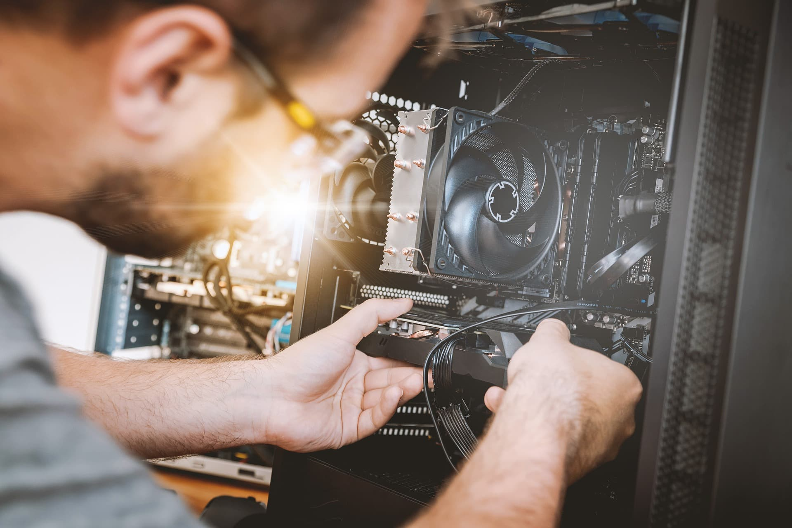

Soporte Tecnico
Servicio Tecnico en computación, Asistencia Tecnica de forma remota y presencial.
En Informatica Virtual ofrecemos soporte tecnico informático presencial y de forma remota para que tu computadora este siempre en condiciones, recomendamos hacer un mantenimiento preventivo de forma periódica, lo mismo que el backup, realiza copias de tus archivos importantes, el uso constante de tu PC conectada a internet pone en riesgo la salud de la misma.
15 años de experiencia en atencion a empresas y clientes particulares.
